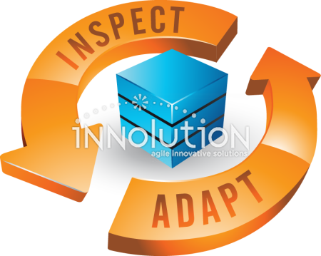

The Sprint Review is a meeting held at the end of each Sprint where the Scrum team shows what it accomplished and gets feedback from stakeholders. Its objective is to inspect the product as it stands and decide what to do next. The team demonstrates working features, not slides or status reports, so everyone sees real progress. For example, a team building a website might show the new pages it finished that week and let the Product Owner click through them.

The Scrum Master, the Developers, and the Product Owner attend, and customers or other stakeholders are often invited. The Product Owner reviews which items are done and which are not, and stakeholders react to what they see. Typical questions are whether the stakeholders like the product, whether they want changes, whether a feature is missing, and whether the team is spending too much effort on something that matters little. Feedback is welcome here, since it shapes the plan for the next Sprint.
The Sprint Review is not the same as the Sprint Retrospective. The Review looks at the product, while the Retrospective looks at how the team works and how to improve its process. It is also not a formal approval gate or a long presentation. For example, if a stakeholder asks for a menu change, the Product Owner adds it to the Product Backlog, and the team plans it in an upcoming Sprint. This steady loop of showing work and collecting feedback keeps the product aligned with what customers want.